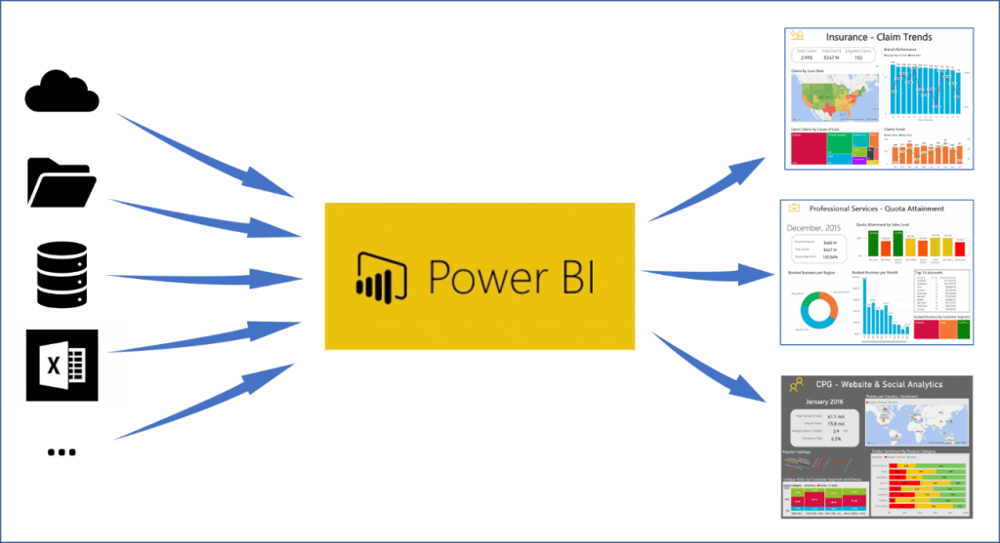

Business Intelligent (BI)
¿Qué son los BI?
Business Intelligence (BI) es un conjunto de herramientas, tecnologías y procesos que permiten a las empresas analizar y transformar datos en información significativa y útil para la toma de decisiones empresariales. Business Intelligence se enfoca en la creación de informes, cuadros de mando, análisis de datos y minería de datos para proporcionar información procesable para los tomadores de decisiones en una organización.
Tienen como objetivo
Ayudar a las organizaciones a tomar decisiones informadas y estratégicas al proporcionar una visión completa y precisa de los datos empresariales. Al utilizar diversas técnicas y herramientas, el business intelligence recopila, analiza y presenta información relevante sobre el rendimiento de la empresa, los procesos internos, las tendencias del mercado y otros factores clave.

ETL
¿Qué es?
ETL es un acrónimo que significa Extract, Transform, Load (Extracción, Transformación, Carga, en español). Es un proceso utilizado en el ámbito de la inteligencia empresarial (business intelligence) y la gestión de datos para integrar y consolidar datos de diferentes fuentes en un único repositorio o almacén de datos.
El proceso ETL se divide en tres etapas:
- Extracción (Extract): En esta etapa, los datos se extraen de múltiples fuentes de origen, como bases de datos, archivos planos, sistemas de gestión de contenido, servicios web, entre otros. Los datos extraídos pueden ser estructurados (por ejemplo, tablas de bases de datos) o no estructurados (por ejemplo, archivos de texto). El objetivo es obtener los datos necesarios para el análisis y la toma de decisiones.
- Transformación (Transform): Una vez que los datos se han extraído, se aplican una serie de transformaciones para limpiar, reorganizar, combinar y dar formato a los datos de acuerdo con los requisitos del almacén de datos o del modelo de datos utilizado. Las transformaciones pueden incluir filtrado, eliminación de duplicados, conversión de formatos, cálculos, normalización, agregación y más. El objetivo es garantizar la calidad y consistencia de los datos, así como prepararlos para el análisis posterior.
- Carga (Load): En esta etapa final, los datos transformados se cargan en el almacén de datos o en la base de datos objetivo. Esto implica estructurar los datos en tablas y columnas, establecer relaciones entre las tablas y asegurarse de que los datos estén disponibles para su posterior consulta y análisis. La carga puede realizarse de forma incremental, agregando solo los datos nuevos o actualizados, o de manera completa, reemplazando todos los datos existentes.